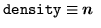
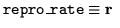
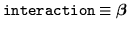
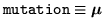

The model's parameters are set by TCL variables in model.tcl. The actual data structures of the model are initialised the first time the model's generate step is called. An example input set is:
set nsp 10 set dims(0) 2 set density(list) 100 set repro_rate(random) true set repro_rate(random,seed) 10 set repro_rate(random,maxval) .01 set repro_rate(random,minval) -.005 set interaction(diag,random) true set interaction(diag,random,seed) 7 set interaction(diag,random,minval) -0.0001 set interaction(diag,random,maxval) -0.00005 set interaction(offdiag,random) true set interaction(offdiag,random,minval) -0.0001 set interaction(offdiag,random,maxval) 0.0001 set interaction(offdiag,random,connectivity) 2 set interaction(offdiag,random,seed) 12 set mutation(random) true set mutation(random,maxval) .5The initial dimension of the system is 10, set by the variable nsp for number of species. The spatial dimensions are set by assigning to the array variable dims -- in this case, the system is one dimensional, with 2 cells (see §7). The remaining variables refer to the initial values of the array variables in Ecolab.

is assigned the value 100 to each element. One can assign a TCL list to these variables also -- see pred-prey.tcl for an example. The other variables
,
and
are assigned uniformly random values in this case. For a full rundown on the syntax of the input parameters, see section 10.